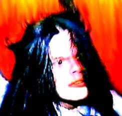
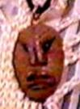

Atormentada pelo trauma causado no filme anterior, Glória é internada numa instituição para doentes mentais, mas seu quadro parece irreparável. Continua com temperamento agressivo apesar do tratamento. Numa de suas crises, Glória agride violentamente a enfermeira da Instituição, o que resulta no seu isolamento total. Enquanto cumpre seu isolamento, Glória parece cada vez pior. É quando volta a ser perturbada pelas aparições de Bisness, o que a deixa mais confusa. É tudo alucinação ou Bisness está realmente ali? Os médicos acham que é tudo parte de sua loucura, e que seus ferimentos são causados por ela mesma. Glória, desesperada e desacreditada começa a partir para sua ruína total, quando reaparece o "Imortal Gato Sagrado do Himalaia" revelando um importante segredo de família: o colar que Glória usa desde criança é um poderoso colar indígena que pertenceu a Índia Solitude, mágica e protetora da Tribo. Com esse colar ela é capaz de fazer aparecer o Arco do Horror e as Invisíveis Flechas do Temor para usar contra Bisness. Livre desse pesadelo, Glória começa a melhorar. Depois de tudo isso, ela continua tendo visões. Mas seriam visões mesmo ou Bisness nunca se foi?
Quiz
- Este filme foi realizado durante uma madrugada, é possível perceber o dia amanhecendo durante os minutos finais, o que deixa mais realista e aterrorizante.
- É o filme mais barato de toda a série.
- O filme inteiro se passa num quarto de hospício.
- A primeira edição do filme era mais longa, mas o diretor realizou vários cortes a fim de deixá-lo mais ágil e dinâmico.
- O Colar Indígena foi feito por um hippie que Leila Cravos era apaixonada, e foi adquirido poucos minutos antes das gravações começarem.
- Nas imagens iniciais, algumas das cenas do primeiro filme não aparecem na versão comercial, somente na versão do diretor.
- A música tema tem vocal de Mario Tarântula.
- Godo Vesi faz uma participação especial como a enfermeira Annie, e é responsável pelas únicas falas do filme.
- O cenário foi montado por Gustavo Philips.
- Pode-se ler o nome da Instituição na solitária de Glória ("Campos da Mente").
- Leila Cravos e Godo Vesi machucaram-se de verdade na cena da agressão.
- Neste filme, Bisness está menos violento e parece se divertir torturando Glória, mais irônico, mostra que seu maior passatempo é assombrá-la, tanto que só tenta matá-la uma vez.
- Os efeitos melhoraram.
- Quando Bisness aparece, dá pra ver o espírito da Índia observando tudo no canto da tela.
- A trilha está menos eclética, valorizando o tema de Bisness.
- A voz que Glória ouve é da própria Leila Cravos.



